ChatEZ Identity
A 360° brand relaunch for an AI dating assistant, built 0 → 1 as one design system — logo, mascot, motion and UI — and carried to every touchpoint, from the app icon to the App Store.
- Team
- Agnes Liu, Pingchuan Ma
- Scope
- Design system, logo, mascot, motion, UI, launch
- Tools
- Figma
Approachable enough to ask.
Consistent enough to trust.
A speech bubble, mid-reply
The app icon is a speech bubble caught mid-reply, typing dots and all; the rounded ChatEZ wordmark keeps the voice friendly. In motion the icon builds itself, the dots type and the name slides out. Then the lockup steps back as EZ drops in, hops to centre stage and greets you with the internet’s favourite dating complaint.
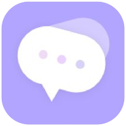
EZ, built from a few simple parts
EZ is the speech bubble come to life: a bubble body, two eyes and two legs. Simple parts make it easy to animate and to dress up — it walks, blinks and hops through the product, and changes outfits across a set of twelve stickers.
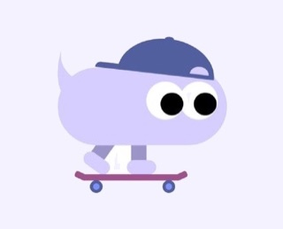
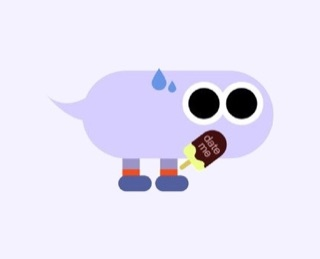
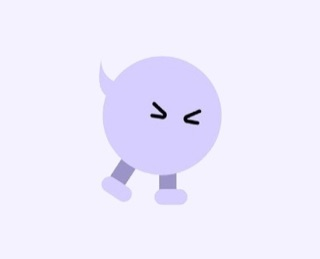
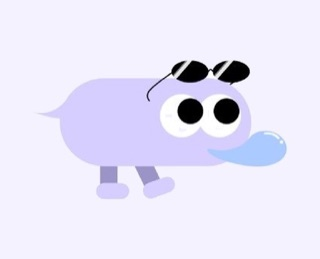
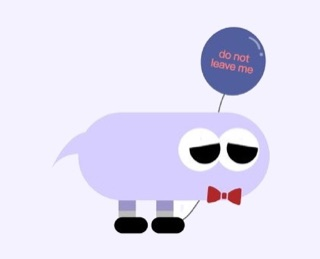
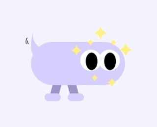
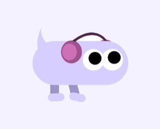
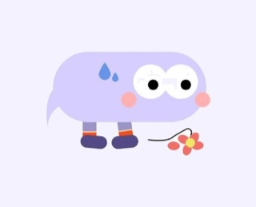
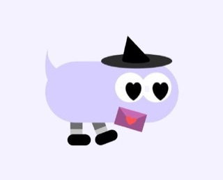
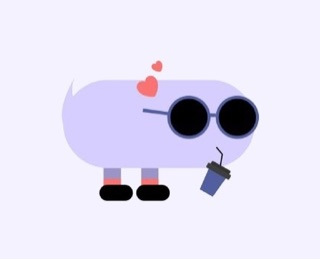
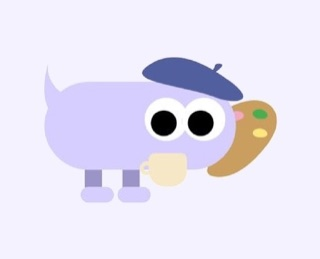
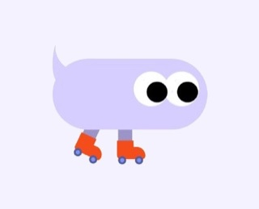
One soft palette, light and dark
Lavender and Mist keep the brand warm and calm, Deep Purple carries the actions, and Ink grounds dark mode in the same family of hues.
The identity, in the product
The brand carries into the interface: lilac actions, soft rounded cards, and EZ keeping the user company. In the prototype you upload a chat, EZ reads it, and the insights land one beat at a time — interest counts up to 75%, the relationship stage fills in step by step — before you pick a reply. Designed for light and dark from the start.
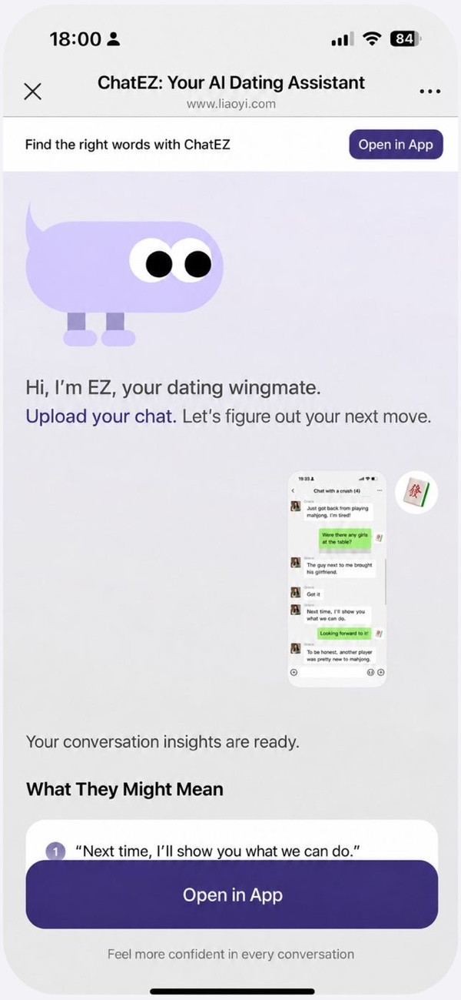
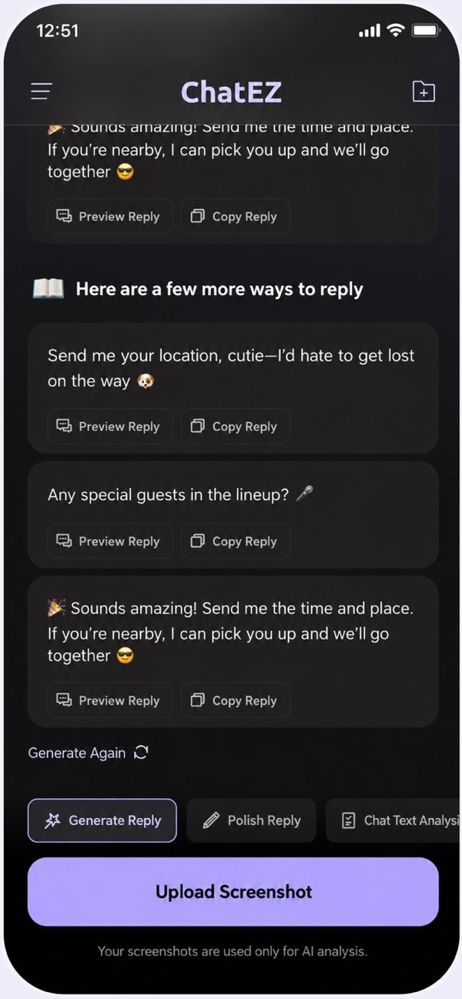
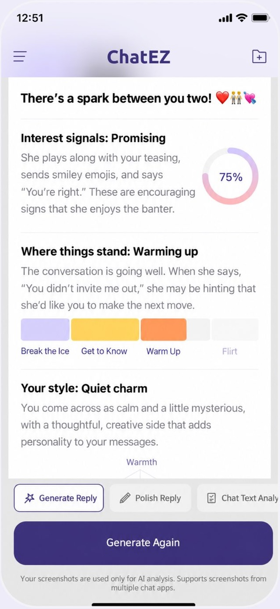
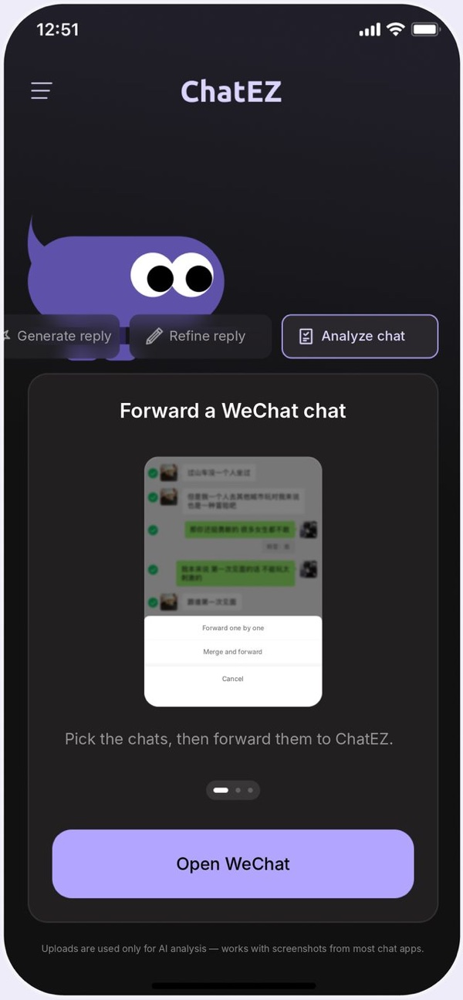
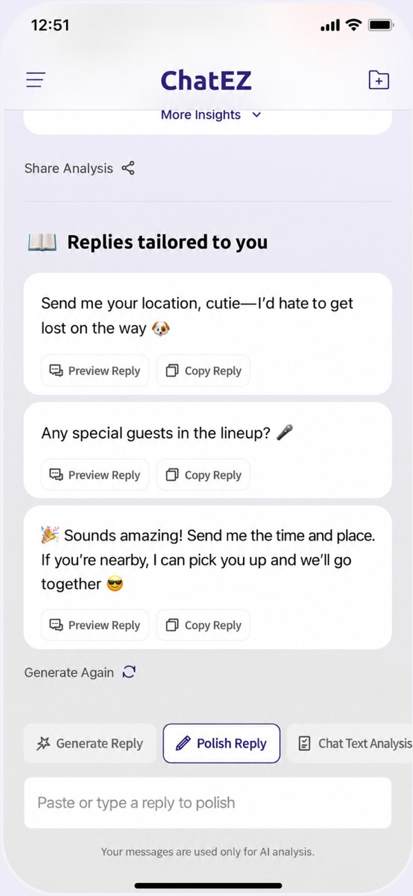
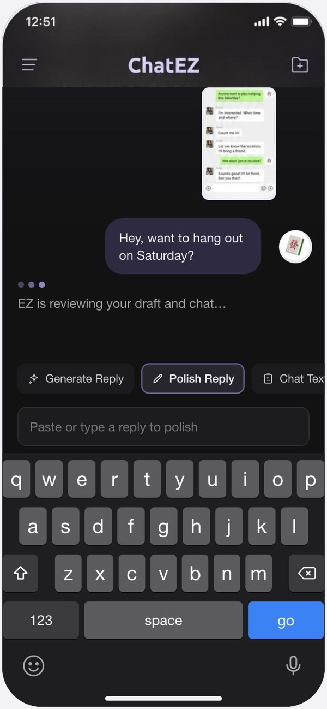
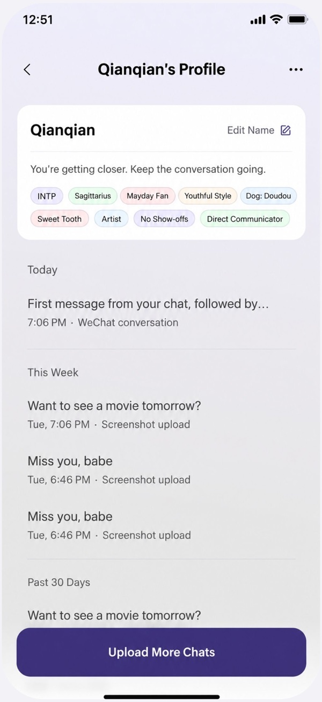
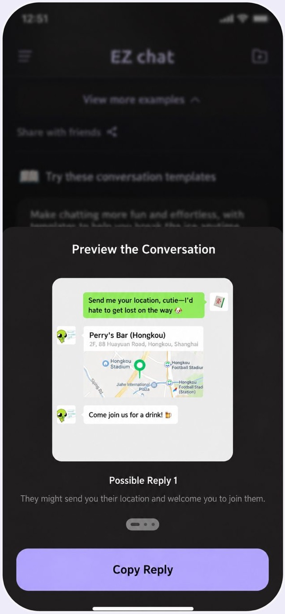
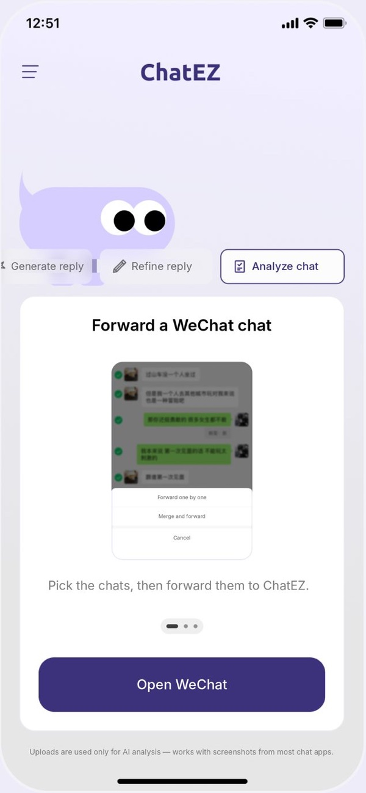
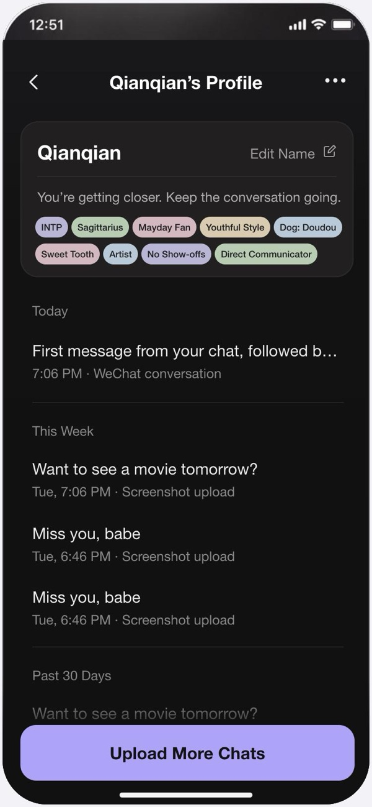
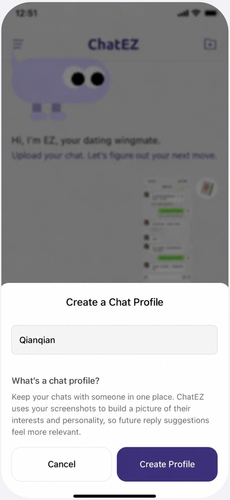
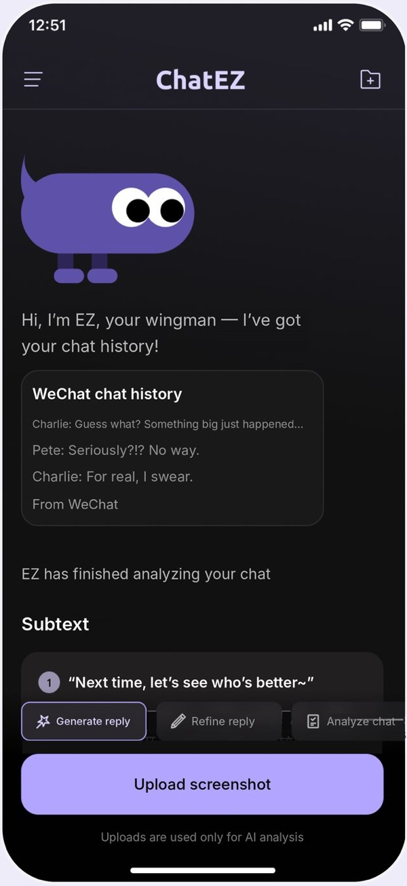
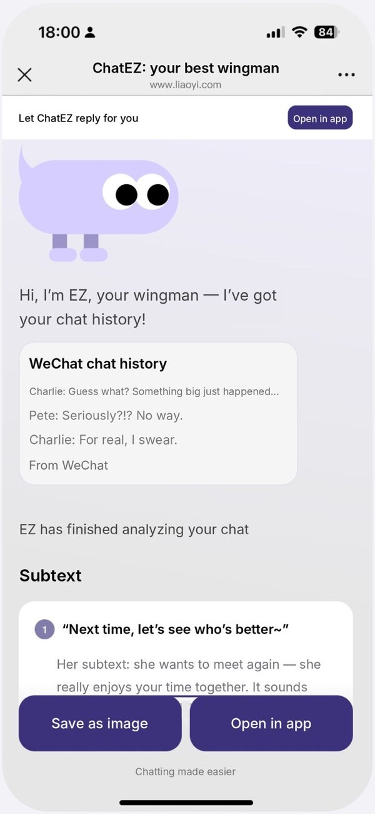
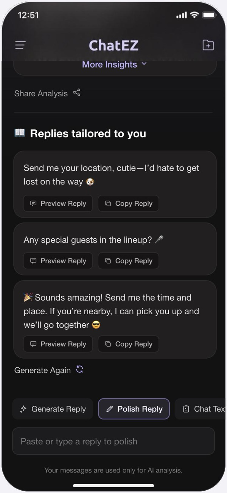
Launch
The same system carried the launch: the App Store listing, posters and social collages, with EZ front and centre.
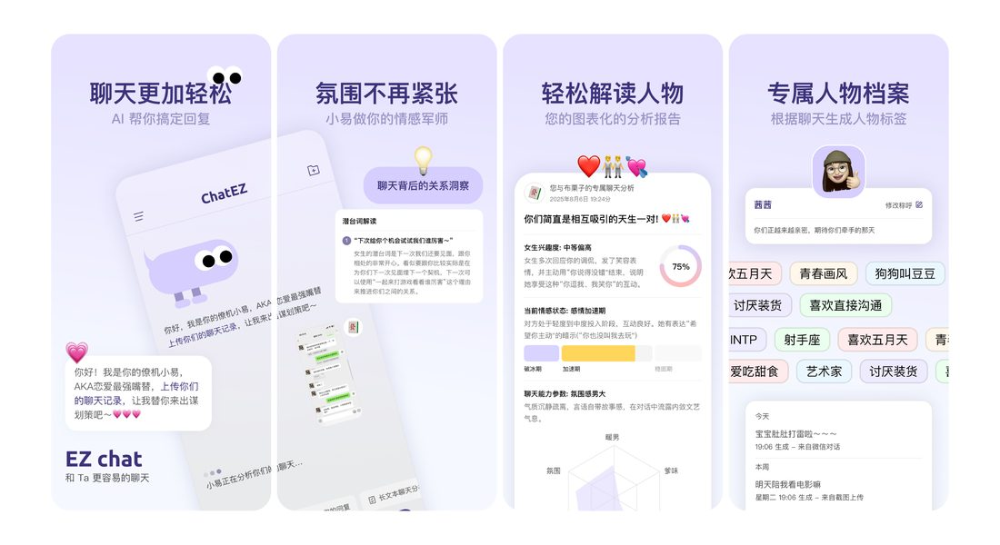
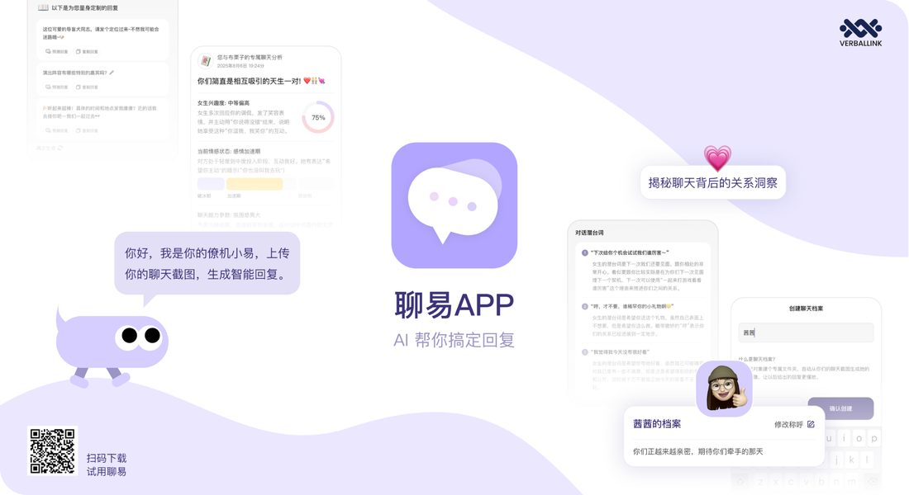
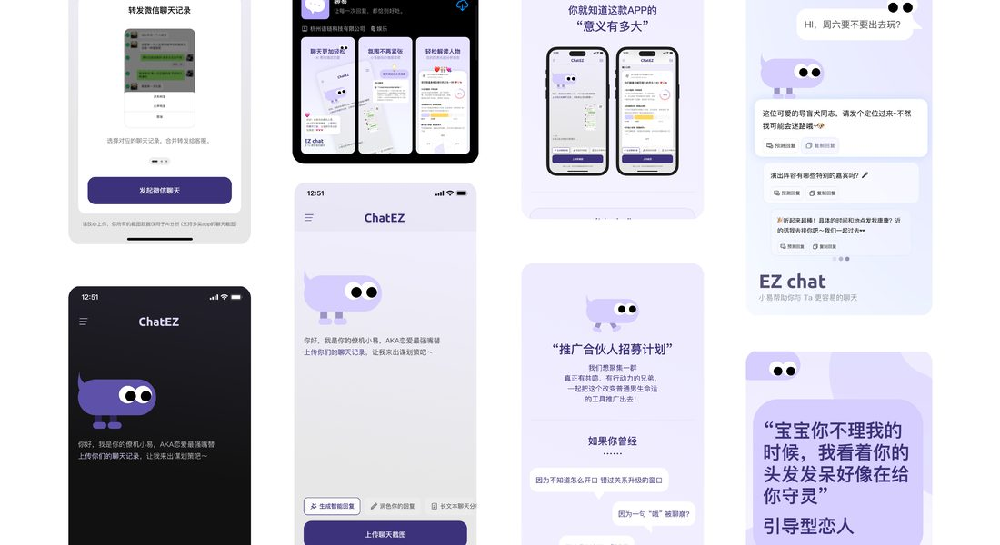
Next project
Amazing Shenzhen
A bilingual identity for a global city campaign